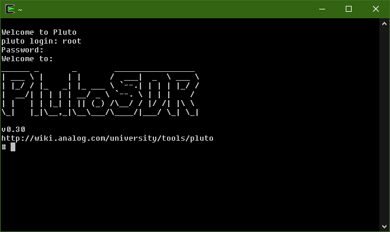

Pluto SDR
Some notes on setting up the ADALM-Pluto SDR device on Windows

Sample Rate/USB
USB 2.0 is a 480 Mbit/s half-duplex serial protocol.Assuming 100% utilization, 480 Mbits/s would be 60 Mbytes/second. According to a USB-IF chairman, “at least 10-15% of the stated peak 60 MB/s (480 Mbit/s) of Hi-Speed USB goes to overhead — the communication protocol between the card and the peripheral.” 2), that would bring things down to ~50 Mbytes/second. There are Control Transfers, Interrupt Transfers, Isochronous Transfers, and Bulk Transfers. We use bulk, but you can't turn off the others, so you loose another 10% overhead, this brings things down to ~45 Mbytes/second Since it is half duplex, that would be ~22.5 Mbytes/second for transmission, and ~22.5 Mbytes/second for reception. Since each sample is two bytes (12-bit samples), that would be ~11 MSamples/second.
Frequency Range
The tuning range of the AD9363 found inside the PlutoSDR is specified by LO center frequencies between 325 and 3800 MHzLoopback Warning:
Do not set the TX attenuation to anything less than -10dB and loop the Tx (output) signal into the Rx (input) connectorSetting Up Drivers on Windows
https://wiki.analog.com/university/tools/pluto/drivers/windowsUSB Console Access
Shows up on COM port 3 (PlutoSDR Serial Console) SerialYou need to have find your favorite Terminal program, here are a few of the ones we use (but don't support - if you have questions, please check with the internet/google).
- Putty
- Tera Term
- Or other Terminal program
The terminal settings are 115200 baud, 8 bits, no parity, 1 stop bit. This is referred to as 115200-8N1. The default username is root, and the default root password is analog.
On windows, followed this guide: https://wiki.cdot.senecacollege.ca/wiki/Connect_to_Serial_Console_from_Windows
run the command 'screen.exe /dev/ttyS2 115200'  To quit screen, enter 'Ctrl+a d' (after logging out) I noticed it seems like you always have to kill the process though after this
You can also log in via ssh over usb: ssh root@192.168.2.1
(an ifconfig shows that the usb0 interface has this IP addr)
Installing libIIO
https://github.com/analogdevicesinc/libiio Or direct link specifically this EXE for windows: https://github.com/analogdevicesinc/libiio/releases/download/v0.21/libiio-0.21.g565bf68-Windows-setup.exe
Pluto USB drive
Pluto shows up as an external drive in windows (E: for me) which contains an info.html page with most of this info contained as well as other links